Chapter Ten
Wave Optics
Wave Optics

In 1637 Descartes gave the corpuscular model of light and derived Snell’s law. It explained the laws of reflection and refraction of light at an interface. The corpuscular model predicted that if the ray of light (on refraction) bends towards the normal then the speed of light would be greater in the second medium. This corpuscular model of light was further developed by Isaac Newton in his famous book entitled OPTICKS and because of the tremendous popularity of this book, the corpuscular model is very often attributed to Newton.
In 1678, the Dutch physicist Christiaan Huygens put forward the wave theory of light – it is this wave model of light that we will discuss in this chapter. As we will see, the wave model could satisfactorily explain the phenomena of reflection and refraction; however, it predicted that on refraction if the wave bends towards the normal then the speed of light would be less in the second medium. This is in contradiction to the prediction made by using the corpuscular model of light. It was much later confirmed by experiments where it was shown that the speed of light in water is less than the speed in air confirming the prediction of the wave model; Foucault carried out this experiment in 1850.
The wave theory was not readily accepted primarily because of Newton’s authority and also because light could travel through vacuum and it was felt that a wave would always require a medium to propagate from one point to the other. However, when Thomas Young performed his famous interference experiment in 1801, it was firmly established that light is indeed a wave phenomenon. The wavelength of visible light was measured and found to be extremely small; for example, the wavelength of yellow light is about 0.5 µm. Because of the smallness of the wavelength of visible light (in comparison to the dimensions of typical mirrors and lenses), light can be assumed to approximately travel in straight lines. This is the field of geometrical optics, which we had discussed in the previous chapter. Indeed, the branch of optics in which one completely neglects the finiteness of the wavelength is called geometrical optics and a ray is defined as the path of energy propagation in the limit of wavelength tending to zero.
After the interference experiment of Young in 1801, for the next 40 years or so, many experiments were carried out involving the interference and diffraction of lightwaves; these experiments could only be satisfactorily explained by assuming a wave model of light. Thus, around the middle of the nineteenth century, the wave theory seemed to be very well established. The only major difficulty was that since it was thought that a wave required a medium for its propagation, how could light waves propagate through vacuum. This was explained when Maxwell put forward his famous electromagnetic theory of light. Maxwell had developed a set of equations describing the laws of electricity and magnetism and using these equations he derived what is known as the wave equation from which he predicted the existence of electromagnetic waves*. From the wave equation, Maxwell could calculate the speed of electromagnetic waves in free space and he found that the theoretical value was very close to the measured value of speed of light. From this, he propounded that light must be an electromagnetic wave. Thus, according to Maxwell, light waves are associated with changing electric and magnetic fields; changing electric field produces a time and space varying magnetic field and a changing magnetic field produces a time and space varying electric field. The changing electric and magnetic fields result in the propagation of electromagnetic waves (or light waves) even in vacuum.
In this chapter we will first discuss the original formulation of the Huygens principle and derive the laws of reflection and refraction. In Sections 10.4 and 10.5, we will discuss the phenomenon of interference which is based on the principle of superposition. In Section 10.6 we will discuss the phenomenon of diffraction which is based on Huygens-Fresnel principle. Finally in Section 10.7 we will discuss the phenomenon of polarisation which is based on the fact that the light waves are transverse electromagnetic waves.
* Maxwell had predicted the existence of electromagnetic waves around 1855; it was much later (around 1890) that Heinrich Hertz produced radiowaves in the laboratory. J.C. Bose and G. Marconi made practical applications of the Hertzian waves
Does light travel in a straight line?
Light travels in a straight line in Class VI; it does not do so in Class XII and beyond! Surprised, aren’t you?
In school, you are shown an experiment in which you take three cardboards with pinholes in them, place a candle on one side and look from the other side. If the flame of the candle and the three pinholes are in a straight line, you can see the candle. Even if one of them is displaced a little, you cannot see the candle. This proves, so your teacher says, that light travels in a straight line.
In the present book, there are two consecutive chapters, one on ray optics and the other on wave optics. Ray optics is based on rectilinear propagation of light, and deals with mirrors, lenses, reflection, refraction, etc. Then you come to the chapter on wave optics, and you are told that light travels as a wave, that it can bend around objects, it can diffract and interfere, etc.
In optical region, light has a wavelength of about half a micrometre. If it encounters an obstacle of about this size, it can bend around it and can be seen on the other side. Thus a micrometre size obstacle will not be able to stop a light ray. If the obstacle is much larger, however, light will not be able to bend to that extent, and will not be seen on the other side.
This is a property of a wave in general, and can be seen in sound waves too. The sound wave of our speech has a wavelength of about 50cm to 1 m. If it meets an obstacle of the size of a few metres, it bends around it and reaches points behind the obstacle. But when it comes across a larger obstacle of a few hundred metres, such as a hillock, most of it is reflected and is heard as an echo.
Then what about the primary school experiment? What happens there is that when we move any cardboard, the displacement is of the order of a few millimetres, which is much larger than the wavelength of light. Hence the candle cannot be seen. If we are able to move one of the cardboards by a micrometer or less, light will be able to diffract, and the candle will still be seen.
One could add to the first sentence in this box: It learns how to bend as it grows up!
We would first define a wavefront: when we drop a small stone on a calm pool of water, waves spread out from the point of impact. Every point on the surface starts oscillating with time. At any instant, a photograph of the surface would show circular rings on which the disturbance is maximum. Clearly, all points on such a circle are oscillating in phase because they are at the same distance from the source. Such a locus of points, which oscillate in phase is called a wavefront; thus a wavefront is defined as a surface of constant phase. The speed with which the wavefront moves outwards from the source is called the speed of the wave. The energy of the wave travels in a direction perpendicular to the wavefront.
If we have a point source emitting waves uniformly in all directions, then the locus of points which have the same amplitude and vibrate in the same phase are spheres and we have what is known as a spherical wave as shown in Fig. 10.1(a). At a large distance from the source, a small portion of the sphere can be considered as a plane and we have what is known as a plane wave [Fig. 10.1(b)].
Figure 10.1 (b) At a large distance from the source, a small portion of the spherical wave can be approximated by a plane wave.
Now, if we know the shape of the wavefront at t = 0, then Huygens principle allows us to determine the shape of the wavefront at a later time τ. Thus, Huygens principle is essentially a geometrical construction, which given the shape of the wafefront at any time allows us to determine the shape of the wavefront at a later time. Let us consider a diverging wave and let F1F2 represent a portion of the spherical wavefront at t = 0
(Fig. 10.2). Now, according to Huygens principle, each point of the wavefront is the source of a secondary disturbance and the wavelets emanating from these points spread out in all directions with the speed of the wave. These wavelets emanating from the wavefront are usually referred to as secondary wavelets and if we draw a common tangent to all these spheres, we obtain the new position of the wavefront at a later time.
Thus, if we wish to determine the shape of the wavefront at t = τ, we draw spheres of radius vτ from each point on the spherical wavefront where v represents the speed of the waves in the medium. If we now draw a common tangent to all these spheres, we obtain the new position of the wavefront at t = τ. The new wavefront shown as G1G2 in Fig. 10.2 is again spherical with point O as the centre.

Figure 10.3 Huygens geometrical construction for a plane wave propagating to the right. F1 F2 is the plane wavefront at t = 0 and G1G2 is the wavefront at a later time τ. The lines A1A2, B1B2 … etc, are normal to both F1F2 and G1G2 and represent rays.
The above model has one shortcoming: we also have a backwave which is shown as D1D2 in Fig. 10.2. Huygens argued that the amplitude of the secondary wavelets is maximum in the forward direction and zero in the backward direction; by making this adhoc assumption, Huygens could explain the absence of the backwave. However, this adhoc assumption is not satisfactory and the absence of the backwave is really justified from more rigorous wave theory.
In a similar manner, we can use Huygens principle to determine the shape of the wavefront for a plane wave propagating through a medium (Fig. 10.3).
10.3.1 Refraction of a plane wave
We will now use Huygens principle to derive the laws of refraction. Let PP′ represent the surface separating medium 1 and medium 2, as shown in Fig. 10.4.
Let v1 and v2 represent the speed of light in medium 1 and medium 2, respectively. We assume a plane wavefront AB propagating in the direction A′A incident on the interface at an angle i as shown in the figure. Let τ be the time taken by the wavefront to travel the distance BC. Thus,
BC = v1 τ
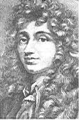
Christiaan Huygens (1629 – 1695) Dutch physicist, astronomer, mathematician and the founder of the wave theory of light. His book, Treatise on light, makes fascinating reading even today. He brilliantly explained the double refraction shown by the mineral calcite in this work in addition to reflection and refraction. He was the first to analyse circular and simple harmonic motion and designed and built improved clocks and telescopes. He discovered the true geometry of Saturn’s rings.
In order to determine the shape of the refracted wavefront, we draw a sphere of radius v2τ from the point A in the second medium (the speed of the wave in the second medium is v2). Let CE represent a tangent plane drawn from the point C on to the sphere. Then, AE = v2 τ and CE would represent the refracted wavefront. If we now consider the triangles ABC and AEC, we readily obtain
sin i = 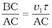 (10.1)
and
sin r = 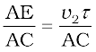 (10.2)
where i and r are the angles of incidence and refraction, respectively. Thus we obtain
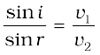 (10.3)
From the above equation, we get the important result that if r < i (i.e., if the ray bends toward the normal), the speed of the light wave in the second medium (v2) will be less then the speed of the light wave in the first medium (v1). This prediction is opposite to the prediction from the corpuscular model of light and as later experiments showed, the prediction of the wave theory is correct. Now, if c represents the speed of light in vacuum, then,
 (10.4)
(10.4)
and
n2 =  (10.5)
(10.5)
are known as the refractive indices of medium 1 and medium 2, respectively. In terms of the refractive indices, Eq. (10.3) can be written as
n1 sin i = n2 sin r (10.6)
This is the Snell’s law of refraction. Further, if λ1 and λ 2 denote the wavelengths of light in medium 1 and medium 2, respectively and if the distance BC is equal to λ 1 then the distance AE will be equal to λ 2 (because if the crest from B has reached C in time τ, then the crest from A should have also reached E in time τ); thus,
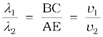
or
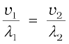 (10.7)
The above equation implies that when a wave gets refracted into a denser medium (v1 > v2) the wavelength and the speed of propagation decrease but the frequency ν (= v/λ) remains the same.
10.3.2 Refraction at a rarer medium
We now consider refraction of a plane wave at a rarer medium, i.e.,
v2 > v1. Proceeding in an exactly similar manner we can construct a refracted wavefront as shown in Fig. 10.5. The angle of refraction
will now be greater than angle of incidence; however, we will still have
n1 sin i = n2 sin r . We define an angle ic by the following equation
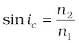 (10.8)
Thus, if i = ic then sin r = 1 and r = 90°. Obviously, for i > ic, there can not be any refracted wave. The angle ic is known as the critical angle and for all angles of incidence greater than the critical angle, we will not have any refracted wave and the wave will undergo what is known as total internal reflection. The phenomenon of total internal reflection and its applications was discussed in Section 9.4.
10.3.3 Reflection of a plane wave by a plane surface
We next consider a plane wave AB incident at an angle i on a reflecting surface MN. If v represents the speed of the wave in the medium and if τ represents the time taken by the wavefront to advance from the point B to C then the distance
BC = vτ
In order the construct the reflected wavefront we draw a sphere of radius vτ from the point A as shown in Fig. 10.6. Let CE represent the tangent plane drawn from the point C to this sphere. Obviously
AE = BC = vτ
If we now consider the triangles EAC and BAC we will find that they are congruent and therefore, the angles i and r (as shown in Fig. 10.6) would be equal. This is the law of reflection.
Once we have the laws of reflection and refraction, the behaviour of prisms, lenses, and mirrors can be understood. These phenomena were discussed in detail in Chapter 9 on the basis of rectilinear propagation of light. Here we just describe the behaviour of the wavefronts as they undergo reflection or refraction. In Fig. 10.7(a) we consider a plane wave passing through a thin prism. Clearly, since the speed of light waves is less in glass, the lower portion of the incoming wavefront (which travels through the greatest thickness of glass) will get delayed resulting in a tilt in the emerging wavefront as shown in the figure. In Fig. 10.7(b) we consider a plane wave incident on a thin convex lens; the central part of the incident plane wave traverses the thickest portion of the lens and is delayed the most. The emerging wavefront has a depression at the centre and therefore the wavefront becomes spherical and converges to the point F which is known as the focus. In Fig. 10.7(c) a plane wave is incident on a concave mirror and on reflection we have a spherical wave converging to the focal point F. In a similar manner, we can understand refraction and reflection by concave lenses and convex mirrors.
From the above discussion it follows that the total time taken from a point on the object to the corresponding point on the image is the same measured along any ray. For example, when a convex lens focusses light to form a real image, although the ray going through the centre traverses a shorter path, but because of the slower speed in glass, the time taken is the same as for rays travelling near the edge of the lens.
10.3.4 The doppler effect
We should mention here that one should be careful in constructing the wavefronts if the source (or the observer) is moving. For example, if there is no medium and the source moves away from the observer, then later wavefronts have to travel a greater distance to reach the observer and hence take a longer time. The time taken between the arrival of two successive wavefronts is hence longer at the observer than it is at the source. Thus, when the source moves away from the observer the frequency as measured by the source will be smaller. This is known as the Doppler effect. Astronomers call the increase in wavelength due to doppler effect as red shift since a wavelength in the middle of the visible region of the spectrum moves towards the red end of the spectrum. When waves are received from a source moving towards the observer, there is an apparent decrease in wavelength, this is referred to as blue shift.
You have already encountered Doppler effect for sound waves in Chapter 15 of Class XI textbook. For velocities small compared to the speed of light, we can use the same formulae which we use for sound waves. The fractional change in frequency ∆ν/ν is given by –vradial/c, where vradial is the component of the source velocity along the line joining the observer to the source relative to the observer; vradial is considered positive when the source moves away from the observer. Thus, the Doppler shift can be expressed as:
 (10.9)
(10.9)
The formula given above is valid only when the speed of the source is small compared to that of light. A more accurate formula for the Doppler effect which is valid even when the speeds are close to that of light, requires the use of Einstein’s special theory of relativity. The Doppler effect for light is very important in astronomy. It is the basis for the measurements of the radial velocities of distant galaxies.
Example 10.1 What speed should a galaxy move with respect
to us so that the sodium line at 589.0 nm is observed
at 589.6 nm?
Solution Since νλ = c,  (for small changes in ν and λ). For
(for small changes in ν and λ). For
∆λ = 589.6 – 589.0 = + 0.6 nm
we get [using Eq. (10.9)]

or, vradial 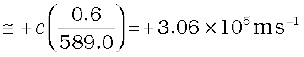
= 306 km/s
Therefore, the galaxy is moving away from us.
Example 10.2
(a) When monochromatic light is incident on a surface separating two media, the reflected and refracted light both have the same frequency as the incident frequency. Explain why?
(b) When light travels from a rarer to a denser medium, the speed decreases. Does the reduction in speed imply a reduction in the energy carried by the light wave?
(c) In the wave picture of light, intensity of light is determined by the square of the amplitude of the wave. What determines the intensity of light in the photon picture of light.
Solution
(a) Reflection and refraction arise through interaction of incident light with the atomic constituents of matter. Atoms may be viewed as
oscillators, which take up the frequency of the external agency (light) causing forced oscillations. The frequency of light emitted by a charged oscillator equals its frequency of oscillation. Thus, the frequency of scattered light equals the frequency of incident light.
(b) No. Energy carried by a wave depends on the amplitude of the wave, not on the speed of wave propagation.
(c) For a given frequency, intensity of light in the photon picture is determined by the number of photons crossing an unit area per unit time.
In this section we will discuss the interference pattern produced by the superposition of two waves. You may recall that we had discussed the superposition principle in Chapter 15 of your Class XI textbook. Indeed the entire field of interference is based on the superposition principle according to which at a particular point in the medium, the resultant displacement produced by a number of waves is the vector sum of the displacements produced by each of the waves.
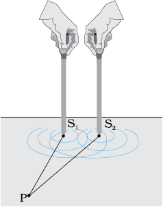
(a)
Figure 10.8 (a) Two needles oscillating in phase in water represent two coherent sources. (b) The pattern of displacement of water molecules at an instant on the surface of water showing nodal N (no displacement) and antinodal A (maximum displacement) lines.
Consider two needles S1 and S2 moving periodically up and down in an identical fashion in a trough of water [Fig. 10.8(a)]. They produce two water waves, and at a particular point, the phase difference between the displacements produced by each of the waves does not change with time; when this happens the two sources are said to be coherent. Figure 10.8(b) shows the position of crests (solid circles) and troughs (dashed circles) at a given instant of time. Consider a point P for which
S1 P = S2 P
Since the distances S1 P and S2 P are equal, waves from S1 and S2 will take the same time to travel to the point P and waves that emanate from S1 and S2 in phase will also arrive, at the point P, in phase.
Thus, if the displacement produced by the source S1 at the point P is given by
y1 = a cos ωt
then, the displacement produced by the source S2 (at the point P) will also be given by
y2 = a cos ωt
Thus, the resultant of displacement at P would be given by
y = y1 + y2 = 2 a cos ωt
Since the intensity is the proportional to the square of the amplitude, the resultant intensity will be given by
I = 4 I0
where I0 represents the intensity produced by each one of the individual sources; I0 is proportional to a2. In fact at any point on the perpendicular bisector of S1S2, the intensity will be 4I0. The two sources are said to interfere constructively and we have what is referred to as constructive interference. We next consider a point Q [Fig. 10.9(a)]
for which
S2Q –S1Q = 2λ
The waves emanating from S1 will arrive exactly two cycles earlier than the waves from S2 and will again be in phase [Fig. 10.9(a)]. Thus, if the displacement produced by S1 is given by
y1 = a cos ωt
then the displacement produced by S2 will be given by
y2 = a cos (ωt – 4π) = a cos ωt
where we have used the fact that a path difference of 2λ corresponds to a phase difference of 4π. The two displacements are once again in phase and the intensity will again be 4 I0 giving rise to constructive interference. In the above analysis we have assumed that the distances S1Q and S2Q are much greater than d (which represents the distance between S1 and S2) so that although S1Q and S2Q are not equal, the amplitudes of the displacement produced by each wave are very nearly the same.
We next consider a point R [Fig. 10.9(b)] for which
S2R – S1R = –2.5λ
The waves emanating from S1 will arrive exactly two and a half cycles later than the waves from S2 [Fig. 10.10(b)]. Thus if the displacement produced by S1 is given by
y1 = a cos ωt
then the displacement produced by S2 will be given by
y2 = a cos (ωt + 5π) = – a cos ωt
where we have used the fact that a path difference of 2.5λ corresponds to a phase difference of 5π. The two displacements are now out of phase and the two displacements will cancel out to give zero intensity. This is referred to as destructive interference.
To summarise: If we have two coherent sources S1 and S2 vibrating in phase, then for an arbitrary point P whenever the path difference,
S1P ~ S2P = nλ (n = 0, 1, 2, 3,...) (10.10)
we will have constructive interference and the resultant intensity will be 4I0; the sign ~ between S1P and S2 P represents the difference between S1P and S2 P. On the other hand, if the point P is such that the path difference,
Figure 10.10 Locus of points for which S1P – S2P is equal to zero, ±λ, ± 2λ, ± 3λ.
S1P ~ S2P = (n+ ) λ (n = 0, 1, 2, 3, ...) (10.11)
) λ (n = 0, 1, 2, 3, ...) (10.11)
we will have destructive interference and the resultant intensity will be zero. Now, for any other arbitrary point G (Fig. 10.10) let the phase difference between the two displacements be φ. Thus, if the displacement produced by S1 is given by
y1 = a cos ωt
then, the displacement produced by S2 would be
y2 = a cos (ωt + φ)
and the resultant displacement will be given by
y = y1 + y2
= a [cos ωt + cos (ωt +φ)]
= 2 a cos (φ/2) cos (ωt + φ/2)
The amplitude of the resultant displacement is 2a cos (φ/2) and therefore the intensity at that point will be
I = 4 I0 cos2 (φ/2) (10.12)
If φ = 0, ± 2 π, ± 4 π,… which corresponds to the condition given by
Eq. (10.10) we will have constructive interference leading to maximum intensity. On the other hand, if φ = ± π, ± 3π, ± 5π … [which corresponds to the condition given by Eq. (10.11)] we will have destructive interference leading to zero intensity. Now if the two sources are coherent (i.e., if the two needles are going up and down regularly) then the phase difference φ at any point will not change with time and we will have a stable interference pattern; i.e., the positions of maxima and minima will not change with time. However, if the two needles do not maintain a constant phase difference, then the interference pattern will also change with time and, if the phase difference changes very rapidly with time, the positions of maxima and minima will also vary rapidly with time and we will see a “time-averaged” intensity distribution. When this happens, we will observe an average intensity that will be given by
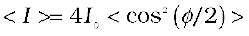 (10.13)
where angular brackets represent time averaging. Indeed it is shown in Section 7.2 that if φ(t) varies randomly with time, the time-averaged quantity < cos2 (φ/2) > will be 1/2. This is also intuitively obvious because the function cos2 (φ/2) will randomly vary between 0 and 1 and the average value will be 1/2. The resultant intensity will be given by
I = 2 I0 (10.14)
at all points.
When the phase difference between the two vibrating sources changes rapidly with time, we say that the two sources are incoherent and when this happens the intensities just add up. This is indeed what happens when two separate light sources illuminate a wall.
We will now discuss interference using light waves. If we use two sodium lamps illuminating two pinholes (Fig. 10.11) we will not observe any interference fringes. This is because of the fact that the light wave emitted from an ordinary source (like a sodium lamp) undergoes abrupt phase changes in times of the order of 10–10 seconds. Thus the light waves coming out from two independent sources of light will not have any fixed phase relationship and would be incoherent, when this happens, as discussed in the previous section, the intensities on the screen will add up.
The British physicist Thomas Young used an ingenious technique to “lock” the phases of the waves emanating from S1 and S2. He made two pinholes S1 and S2 (very close to each other) on an opaque screen [Fig. 10.12(a)]. These were illuminated by another pinholes that was in turn, lit by a bright source. Light waves spread out from S and fall on both S1 and S2. S1 and S2 then behave like two coherent sources because light waves coming out from S1 and S2 are derived from the same original source and any abrupt phase change in S will manifest in exactly similar phase changes in the light coming out from S1 and S2. Thus, the two sources S1 and S2 will be locked in phase; i.e., they will be coherent like the two vibrating needle in our water wave example[Fig. 10.8(a)].
Figure 10.11 If two sodium lamps illuminate two pinholes S1 and S2, the intensities will add up and no interference fringes will be observed on the screen.
Thus spherical waves emanating from S1 and S2 will produce interference fringes on the screen GG′, as shown in Fig. 10.12(b). The positions of maximum and minimum intensities can be calculated by using the analysis given in Section 10.4 where we had shown that for an arbitrary point P on the line GG′ [Fig. 10.12(b)] to correspond to a maximum, we must have
S2P – S1P = nλ; n = 0, 1, 2 ... (10.15)
Now,
(S2P)2 – (S1P)2 = 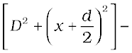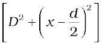= 2x d
where S1S2 = d and OP = x . Thus
S2P – S1P = 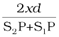 (10.16)
(a) (b)
If x, d<<D then negligible error will be introduced if S2P + S1P (in the denominator) is replaced by 2D. For example, for d = 0.1 cm, D = 100 cm, OP = 1 cm (which correspond to typical values for an interference experiment using light waves), we have S2P + S1P = [(100)2 + (1.05)2]½ + [(100)2 + (0.95)2]½
 200.01 cm
200.01 cm
Thus if we replace S2P + S1P by 2 D, the error involved is about 0.005%. In this approximation, Eq. (10.16) becomes
S2P – S1P ≈ 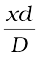 (10.17)
Hence we will have constructive interference resulting in a bright region when
x = xn = 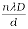; n = 0,  1, 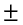2, ... (10.18)
1, 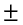2, ... (10.18)
On the other hand, we will have a dark region near
x = xn = (n+ ) 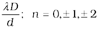 (10.19)
) 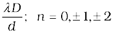 (10.19)
Thus dark and bright bands appear on the screen, as shown in Fig. 10.13. Such bands are called fringes. Equations (10.18) and (10.19) show that dark and bright fringes are equally spaced and the distance between two consecutive bright and dark fringes is given by
β = xn+1 –xn
or β = 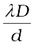 (10.20)
which is the expression for the fringe width. Obviously, the central point O (in Fig. 10.12) will be bright because S1O = S2O and it will correspond to n = 0. If we consider the line perpendicular to the plane of the paper and passing through O [i.e., along the y-axis] then all points on this line will be equidistant from S1 and S2 and we will have a bright central fringe which is a straight line as shown in Fig. 10.13. In order to determine the shape of the interference pattern on the screen we note that a particular fringe would correspond to the locus of points with a constant value of S2P – S1P. Whenever this constant is an integral multiple of λ, the fringe will be bright and whenever it is an odd integral multiple of λ/2 it will be a dark fringe. Now, the locus of the point P lying in the x-y plane such that S2P – S1P (= ∆) is a constant, is a hyperbola. Thus the fringe pattern will strictly be a hyperbola; however, if the distance D is very large compared to the fringe width, the fringes will be very nearly straight lines as shown in Fig. 10.13.
In the double-slit experiment shown in Fig. 10.12, we have taken the source hole S on the perpendicular bisector of the two slits, which is shown as the line SO. What happens if the source S is slightly away from the perpendicular bisector. Consider that the source is moved to some new point S′ and suppose that Q is the mid-point of S1 and S2. If the angle S′QS is φ, then the central bright fringe occurs at an angle –φ, on the other side. Thus, if the source S is on the perpendicular bisector, then the central fringe occurs at O, also on the perpendicular bisector. If S is shifted by an angle φ to point S′, then the central fringe appears at a point O′ at an angle –φ, which means that it is shifted by the same angle on the other side of the bisector. This also means that the source S′, the mid-point Q and the point O′ of the central fringe are in a straight line.
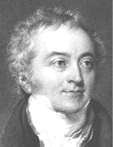
Thomas Young(1773 – 1829) English physicist, physician and Egyptologist. Young worked on a wide variety of scientific problems, ranging from the structure of the eye and the mechanism of vision to the decipherment of the Rosetta stone. He revived the wave theory of light and recognised that interference phenomena provide proof of the wave properties of light.
We end this section by quoting from the Nobel lecture of Dennis Gabor*
The wave nature of light was demonstrated convincingly for the first time in 1801 by Thomas Young by a wonderfully simple experiment. He let a ray of sunlight into a dark room, placed a dark screen in front of it, pierced with two small pinholes, and beyond this, at some distance, a white screen. He then saw two darkish lines at both sides of a bright line, which gave him sufficient encouragement to repeat the experiment, this time with spirit flame as light source, with a little salt in it to produce the bright yellow sodium light. This time he saw a number of dark lines, regularly spaced; the first clear proof that light added to light can produce darkness. This phenomenon is called interference. Thomas Young had expected it because he believed in the wave theory of light.
We should mention here that the fringes are straight lines although S1 and S2 are point sources. If we had slits instead of the point sources (Fig. 10.14), each pair of points would have produced straight line fringes resulting in straight line fringes with increased intensities.
* Dennis Gabor received the 1971 Nobel Prize in Physics for discovering the principles of holography.
Example 10.3 Two slits are made one millimetre apart and the screen is placed one metre away. What is the fringe separation when blue-green light of wavelength 500 nm is used?
Solution Fringe spacing =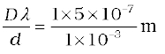
= 5 × 10–4 m = 0.5 mm
Example 10.4 What is the effect on the interference fringes in a Young’s double-slit experiment due to each of the following operations:
(a) the screen is moved away from the plane of the slits;
(b) the (monochromatic) source is replaced by another (monochromatic) source of shorter wavelength;
(c) the separation between the two slits is increased;
(d) the source slit is moved closer to the double-slit plane;
(e) the width of the source slit is increased;
(f) the monochromatic source is replaced by a source of white
light?
(In each operation, take all parameters, other than the one specified, to remain unchanged.)
Solution
(a) Angular separation of the fringes remains constant
(= λ/d). The actual separation of the fringes increases in proportion to the distance of the screen from the plane of the
two slits.
(b) The separation of the fringes (and also angular separation) decreases. See, however, the condition mentioned in (d) below.
(c) The separation of the fringes (and also angular separation) decreases. See, however, the condition mentioned in (d) below.
(d) Let s be the size of the source and S its distance from the plane of the two slits. For interference fringes to be seen, the condition
s/S < λ/d should be satisfied; otherwise, interference patterns produced by different parts of the source overlap and no fringes are seen. Thus, as S decreases (i.e., the source slit is brought closer), the interference pattern gets less and less sharp, and when the source is brought too close for this condition to be valid, the fringes disappear. Till this happens, the fringe separation remains fixed.
(e) Same as in (d). As the source slit width increases, fringe pattern gets less and less sharp. When the source slit is so wide that the condition s/S ≤ λ/d is not satisfied, the interference pattern disappears.
(f) The interference patterns due to different component colours of white light overlap (incoherently). The central bright fringes for different colours are at the same position. Therefore, the central fringe is white. For a point P for which S2P –S1P = λb/2, where λb
(≈ 4000 Å) represents the wavelength for the blue colour, the blue component will be absent and the fringe will appear red in colour. Slightly farther away where S2Q–S1Q = λb = λr/2 where λr (≈ 8000 Å) is the wavelength for the red colour, the fringe will be predominantly blue.
Thus, the fringe closest on either side of the central white fringe is red and the farthest will appear blue. After a few fringes, no clear fringe pattern is seen.
If we look clearly at the shadow cast by an opaque object, close to the region of geometrical shadow, there are alternate dark and bright regions just like in interference. This happens due to the phenomenon of diffraction. Diffraction is a general characteristic exhibited by all types of waves, be it sound waves, light waves, water waves or matter waves. Since the wavelength of light is much smaller than the dimensions of most obstacles; we do not encounter diffraction effects of light in everyday observations. However, the finite resolution of our eye or of optical instruments such as telescopes or microscopes is limited due to the phenomenon of diffraction. Indeed the colours that you see when a CD is viewed is due to diffraction effects. We will now discuss the phenomenon of diffraction.
10.6.1 The single slit
In the discussion of Young’s experiment, we stated that a single narrow slit acts as a new source from which light spreads out. Even before Young, early experimenters – including Newton – had noticed that light spreads out from narrow holes and slits. It seems to turn around corners and enter regions where we would expect a shadow. These effects, known as diffraction, can only be properly understood using wave ideas. After all, you are hardly surprised to hear sound waves from someone talking around a corner!
When the double slit in Young’s experiment is replaced by a single narrow slit (illuminated by a monochromatic source), a broad pattern with a central bright region is seen. On both sides, there are alternate dark and bright regions, the intensity becoming weaker away from the centre (Fig. 10.16). To understand this, go to Fig. 10.15, which shows a parallel beam of light falling normally on a single slit LN of width a. The diffracted light goes on to meet a screen. The midpoint of the slit is M.
A straight line through M perpendicular to the slit plane meets the screen at C. We want the intensity at any point P on the screen. As before, straight lines joining P to the different points L,M,N, etc., can be treated as parallel, making an angle θ with the normal MC.
The basic idea is to divide the slit into much smaller parts, and add their contributions at P with the proper phase differences. We are treating different parts of the wavefront at the slit as secondary sources. Because the incoming wavefront is parallel to the plane of the slit, these sources are in phase.
The path difference NP – LP between the two edges of the slit can be calculated exactly as for Young’s experiment. From Fig. 10.15,
NP – LP = NQ
= a sin θ
≈ aθ (10.21)
Similarly, if two points M1 and M2 in the slit plane are separated by y, the path difference M2P – M1P ≈ yθ. We now have to sum up equal, coherent contributions from a large number of sources, each with a different phase. This calculation was made by Fresnel using integral calculus, so we omit it here. The main features of the diffraction pattern can be understood by simple arguments.
At the central point C on the screen, the angle θ is zero. All path differences are zero and hence all the parts of the slit contribute in phase. This gives maximum intensity at C. Experimental observation shown in Fig. 10.15 indicates that the intensity has a central maximum at θ = 0 and other secondary maxima at θ (n+1/2) λ/a, and has minima (zero intensity) at θ nλ/a,
n = ±1, ±2, ±3, .... It is easy to see why it has minima at these values of angle. Consider first the angle θ where the path difference aθ is λ. Then,
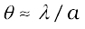. (10.22)
Now, divide the slit into two equal halves LM and MN each of size a/2. For every point M1 in LM, there is a point M2 in MN such that M1M2 = a/2. The path difference between M1 and M2 at P = M2P – M1P = θa/2 = λ/2 for the angle chosen. This means that the contributions from M1 and M2 are 180º out of phase and cancel in the direction θ = λ/a. Contributions from the two halves of the slit LM and MN, therefore, cancel each other. Equation (10.22) gives the angle at which the intensity falls to zero. One can similarly show that the intensity is zero for θ = nλ/a, with n being any integer (except zero!). Notice that the angular size of the central maximum increases when the slit width a decreases.
Figure 10.15 The geometry of path differences for diffraction by a single slit.
It is also easy to see why there are maxima at θ = (n + 1/2) λ/a and why they go on becoming weaker and weaker with increasing n. Consider an angle θ = 3λ/2a which is midway between two of the dark fringes. Divide the slit into three equal parts. If we take the first two thirds of the slit, the path difference between the two ends would be
 (10.23)
(10.23)
The first two-thirds of the slit can therefore be divided into two halves which have a λ/2 path difference. The contributions of these two halves cancel in the same manner as described earlier. Only the remaining one-third of the slit contributes to the intensity at a point between the two minima. Clearly, this will be much weaker than the central maximum (where the entire slit contributes in phase). One can similarly show that there are maxima at (n + 1/2) λ/a with n = 2, 3, etc. These become weaker with increasing n, since only one-fifth, one-seventh, etc., of the slit contributes in these cases. The photograph and intensity pattern corresponding to it is shown in Fig. 10.16.
There has been prolonged discussion about difference between intereference and diffraction among scientists since the discovery of these phenomena. In this context, it is interesting to note what Richard Feynman* has said in his famous Feynman Lectures on Physics:
No one has ever been able to define the difference between interference and diffraction satisfactorily. It is just a question of usage, and there is no specific, important physical difference between them. The best we can do is, roughly speaking, is to say that when there are only a few sources, say two interfering sources, then the result is usually called interference, but if there is a large number of them, it seems that the word diffraction is more often used.
Figure 10.16 Intensity distribution and photograph of fringes due to diffraction at single slit.
In the double-slit experiment, we must note that the pattern on the screen is actually a superposition of single-slit diffraction from each slit or hole, and the double-slit interference pattern. This is shown in Fig. 10.17. It shows a broader diffraction peak in which there appear several fringes of smaller width due to double-slit interference. The number of interference fringes occuring in the broad diffraction peak depends on the ratio d/a, that is the ratio of the distance between the two slits to the width of a slit. In the limit of a becoming very small, the diffraction pattern will become very flat and we will obsrve the two-slit interference pattern [see Fig. 10.13(b)].
Example 10.5 In Example 10.3, what should the width of each slit be to obtain 10 maxima of the double slit pattern within the central maximum of the single slit pattern?
Solution We want 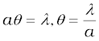
 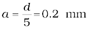
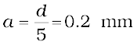
Notice that the wavelength of light and distance of the screen do not enter in the calculation of a.
In the double-slit interference experiment of Fig. 10.12, what happens if we close one slit? You will see that it now amounts to a single slit. But you will have to take care of some shift in the pattern. We now have a source at S, and only one hole (or slit) S1 or S2. This will produce a single-slit diffraction pattern on the screen. The centre of the central bright fringe will appear at a point which lies on the straight line SS1 or SS2, as the case may be.
We now compare and contrast the interference pattern with that seen for a coherently illuminated single slit (usually called the single slit diffraction pattern).
(i) The interference pattern has a number of equally spaced bright and dark bands. The diffraction pattern has a central bright maximum which is twice as wide as the other maxima. The intensity falls as we go to successive maxima away from the centre, on either side.
(ii) We calculate the interference pattern by superposing two waves originating from the two narrow slits. The diffraction pattern is a superposition of a continuous family of waves originating from each point on a single slit.
(iii) For a single slit of width a, the first null of the interference pattern occurs at an angle of λ/a. At the same angle of λ/a, we get a maximum (not a null) for two narrow slits separated by a distance a.
One must understand that both d and a have to be quite small, to be able to observe good interference and diffraction patterns. For example, the separation d between the two slits must be of the order of a milimetre or so. The width a of each slit must be even smaller, of the order of 0.1 or 0.2 mm.
In our discussion of Young’s experiment and the single-slit diffraction, we have assumed that the screen on which the fringes are formed is at a large distance. The two or more paths from the slits to the screen were treated as parallel. This situation also occurs when we place a converging lens after the slits and place the screen at the focus. Parallel paths from the slit are combined at a single point on the screen. Note that the lens does not introduce any extra path differences in a parallel beam. This arrangement is often used since it gives more intensity than placing the screen far away. If f is the focal length of the lens, then we can easily work out the size of the central bright maximum. In terms of angles, the separation of the central maximum from the first null of the diffraction pattern is λ/a. Hence, the size on the screen will be f λ/a.
10.6.2 Seeing the single slit diffraction pattern
It is surprisingly easy to see the single-slit diffraction pattern for oneself. The equipment needed can be found in most homes –– two razor blades and one clear glass electric bulb preferably with a straight filament. One has to hold the two blades so that the edges are parallel and have a narrow slit in between. This is easily done with the thumb and forefingers (Fig. 10.18).
Keep the slit parallel to the filament, right in front of the eye. Use spectacles if you normally do. With slight adjustment of the width of the slit and the parallelism of the edges, the pattern should be seen with its bright and dark bands. Since the position of all the bands (except the central one) depends on wavelength, they will show some colours. Using a filter for red or blue will make the fringes clearer. With both filters available, the wider fringes for red compared to blue can be seen.
In this experiment, the filament plays the role of the first slit S in
Fig. 10.16. The lens of the eye focuses the pattern on the screen (the retina of the eye).
With some effort, one can cut a double slit in an aluminium foil with a blade. The bulb filament can be viewed as before to repeat Young’s experiment. In daytime, there is another suitable bright source subtending a small angle at the eye. This is the reflection of the Sun in any shiny convex surface (e.g., a cycle bell). Do not try direct sunlight – it can damage the eye and will not give fringes anyway as the Sun subtends an angle of (1/2)º.
In interference and diffraction, light energy is redistributed. If it reduces in one region, producing a dark fringe, it increases in another region, producing a bright fringe. There is no gain or loss of energy, which is consistent with the principle of conservation of energy.
10.6.3 Resolving power of optical instruments
In Chapter 9 we had discussed about telescopes. The angular resolution of the telescope is determined by the objective of the telescope. The stars which are not resolved in the image produced by the objective cannot be resolved by any further magnification produced by the eyepiece. The primary purpose of the eyepiece is to provide magnification of the image produced by the objective.
Consider a parallel beam of light falling on a convex lens. If the lens is well corrected for aberrations, then geometrical optics tells us that the beam will get focused to a point. However, because of diffraction, the beam instead of getting focused to a point gets focused to a spot of finite area. In this case the effects due to diffraction can be taken into account by considering a plane wave incident on a circular aperture followed by a convex lens (Fig. 10.19). The analysis of the corresponding diffraction pattern is quite involved; however, in principle, it is similar to the analysis carried out to obtain the single-slit diffraction pattern. Taking into account the effects due to diffraction, the pattern on the focal plane would consist of a central bright region surrounded by concentric dark and bright rings (Fig. 10.19). A detailed analysis shows that the radius of the central bright region is approximately given by
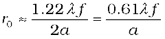 (10.24)
where f is the focal length of the lens and 2a is the diameter of the circular aperture or the diameter of the lens, whichever is smaller. Typically if
λ ≈ 0.5 µm, f ≈ 20 cm and a ≈ 5 cm
we have
r0 ≈ 1.2 µm
Although the size of the spot is very small, it plays an important role in determining the limit of resolution of optical instruments like a telescope or a microscope. For the two stars to be just resolved

implying
 (10.25)
(10.25)
Thus ∆θ will be small if the diameter of the objective is large. This implies that the telescope will have better resolving power if a is large. It is for this reason that for better resolution, a telescope must have a large diameter objective.
Example 10.6 Assume that light of wavelength 6000Å is coming from a star. What is the limit of resolution of a telescope whose objective has a diameter of 100 inch?
Solution A 100 inch telescope implies that 2a = 100 inch
= 254 cm. Thus if,
λ ≈ 6000Å = 6×10–5 cm
then
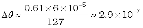radians
We can apply a similar argument to the objective lens of a microscope. In this case, the object is placed slightly beyond f, so that a real image is formed at a distance v [Fig. 10.20]. The magnification – ratio of image size to object size – is given by m v/f. It can be seen from
Fig. 10.20 that
D/f 2 tan β (10.26)
where 2β is the angle subtended by the diameter of the objective lens at the focus of the microscope.
When the separation between two points in a microscopic specimen is comparable to the wavelength λ of the light, the diffraction effects become important. The image of a point object will again be a diffraction pattern whose size in the image plane will be
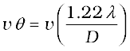 (10.27)
Two objects whose images are closer than this distance will not be resolved, they will be seen as one. The corresponding minimum separation, dmin, in the object plane is given by
dmin = 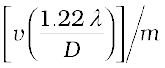
= 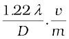
= (10.28)
Now, combining Eqs. (10.26) and (10.28), we get

(10.29)
If the medium between the object and the objective lens is not air but a medium of refractive index n, Eq. (10.29) gets modified to
 (10.30)
(10.30)
The product n sinβ is called the numerical aperture and is sometimes marked on the objective.
Determine the resolving power of your eye
You can estimate the resolving power of your eye with a simple experiment. Make black stripes of equal width separated by white stripes; see figure here. All the black stripes should be of equal width, while the width of the intermediate white stripes should increase as you go from the left to the right. For example, let all black stripes have a width of 5 mm. Let the width of the first two white stripes be 0.5 mm each, the next two white stripes be 1 mm each, the next two 1.5 mm each, etc. Paste this pattern on a wall in a room or laboratory, at the height of your eye.

Now watch the pattern, preferably with one eye. By moving away or closer to the wall, find the position where you can just see some two black stripes as separate stripes. All the black stripes to the left of this stripe would merge into one another and would not be distinguishable. On the other hand, the black stripes to the right of this would be more and more clearly visible. Note the width d of the white stripe which separates the two regions, and measure the distance D of the wall from your eye. Then d/D is the resolution of your eye.
You have watched specks of dust floating in air in a sunbeam entering through your window. Find the distance (of a speck) which you can clearly see and distinguish from a neighbouring speck. Knowing the resolution of your eye and the distance of the speck, estimate the size of the speck of dust.
The resolving power of the microscope is given by the reciprocal of the minimum separation of two points seen as distinct. It can be seen from Eq. (10.30) that the resolving power can be increased by choosing a medium of higher refractive index. Usually an oil having a refractive index close to that of the objective glass is used. Such an arrangement is called an ‘oil immersion objective’. Notice that it is not possible to make sinβ larger than unity. Thus, we see that the resolving power of a microscope is basically determined by the wavelength of the light used.
There is a likelihood of confusion between resolution and magnification, and similarly between the role of a telescope and a microscope to deal with these parameters. A telescope produces images of far objects nearer to our eye. Therefore objects which are not resolved at far distance, can be resolved by looking at them through a telescope. A microscope, on the other hand, magnifies objects (which are near to us) and produces their larger image. We may be looking at two stars or two satellites of a far-away planet, or we may be looking at different regions of a living cell. In this context, it is good to remember that a telescope resolves whereas a microscope magnifies.
10.6.4 The validity of ray optics
An aperture (i.e., slit or hole) of size a illuminated by a parallel beam sends diffracted light into an angle of approximately ≈ λ/a. This is the angular size of the bright central maximum. In travelling a distance z, the diffracted beam therefore acquires a width zλ/a due to diffraction. It is interesting to ask at what value of z the spreading due to diffraction becomes comparable to the size a of the aperture. We thus approximately equate zλ/a with a. This gives the distance beyond which divergence of the beam of width a becomes significant. Therefore,
(10.31)
We define a quantity zF called the Fresnel distance by the following equation
Equation (10.31) shows that for distances much smaller than zF , the spreading due to diffraction is smaller compared to the size of the beam. It becomes comparable when the distance is approximately zF. For distances much greater than zF, the spreading due to diffraction dominates over that due to ray optics (i.e., the size a of the aperture). Equation (10.31) also shows that ray optics is valid in the limit of wavelength tending to zero.
Example 10.7 For what distance is ray optics a good approximation when the aperture is 3 mm wide and the wavelength is 500 nm?
Solution
This example shows that even with a small aperture, diffraction spreading can be neglected for rays many metres in length. Thus, ray optics is valid in many common situations.
Consider holding a long string that is held horizontally, the other end of which is assumed to be fixed. If we move the end of the string up and down in a periodic manner, we will generate a wave propagating in the +x direction (Fig. 10.21). Such a wave could be described by the following equation
y (x,t) = a sin (kx – ωt) (10.32)
where a and ω (= 2πν) represent the amplitude and the angular frequency of the wave, respectively; further,
 (10.33)
(10.33)
represents the wavelength associated with the wave. We had discussed propagation of such waves in Chapter 15 of Class XI textbook. Since the displacement (which is along the y direction) is at right angles to the direction of propagation of the wave, we have what is known as a transverse wave. Also, since the displacement is in the y direction, it is often referred to as a y-polarised wave. Since each point on the string moves on a straight line, the wave is also referred to as a linearly polarised wave. Further, the string always remains confined to the x-y plane and therefore it is also referred to as a plane polarised wave.

In a similar manner we can consider the vibration of the string in the x-z plane generating a z-polarised wave whose displacement will be given by
z (x,t) = a sin (kx – ωt) (10.34)
It should be mentioned that the linearly polarised waves [described by Eqs. (10.33) and (10.34)] are all transverse waves; i.e., the displacement of each point of the string is always at right angles to the direction of propagation of the wave. Finally, if the plane of vibration of the string is changed randomly in very short intervals of time, then we have what is known as an unpolarised wave. Thus, for an unpolarised wave the displacement will be randomly changing with time though it will always be perpendicular to the direction of propagation.
Light waves are transverse in nature; i.e., the electric field associated with a propagating light wave is always at right angles to the direction of propagation of the wave. This can be easily demonstrated using a simple polaroid. You must have seen thin plastic like sheets, which are called polaroids. A polaroid consists of long chain molecules aligned in a particular direction. The electric vectors (associated with the propagating light wave) along the direction of the aligned molecules get absorbed. Thus, if an unpolarised light wave is incident on such a polaroid then the light wave will get linearly polarised with the electric vector oscillating along a direction perpendicular to the aligned molecules; this direction is known as the pass-axis of the polaroid.
Thus, if the light from an ordinary source (like a sodium lamp) passes through a polaroid sheet P1, it is observed that its intensity is reduced by half. Rotating P1 has no effect on the transmitted beam and transmitted intensity remains constant. Now, let an identical piece of polaroid P2 be placed before P1. As expected, the light from the lamp is reduced in intensity on passing through P2 alone. But now rotating P1 has a dramatic effect on the light coming from P2. In one position, the intensity transmitted by P2 followed by P1 is nearly zero. When turned by 90º from this position, P1 transmits nearly the full intensity emerging from P2 (Fig. 10.22).
The above experiment can be easily understood by assuming that light passing through the polaroid P2 gets polarised along the pass-axis of P2. If the pass-axis of P2 makes an angle θ with the pass-axis of P1, then when the polarised beam passes through the polaroid P2, the component E cos θ (along the pass-axis of P2) will pass through P2. Thus, as we rotate the polaroid P1 (or P2), the intensity will vary as:
I = I0 cos2θ (10.35)
where I0 is the intensity of the polarized light after passing through P1. This is known as Malus’ law. The above discussion shows that the intensity coming out of a single polaroid is half of the incident intensity. By putting a second polaroid, the intensity can be further controlled from 50% to zero of the incident intensity by adjusting the angle between the pass-axes of two polaroids.
Figure 10.22 (a) Passage of light through two polaroids P2 and P1. The transmitted fraction falls from 1 to 0 as the angle between them varies from 0º to 90º. Notice that the light seen through a single polaroid P1 does not vary with angle. (b) Behaviour of the electric vector when light passes through two polaroids. The transmitted polarisation is the component parallel to the polaroid axis. The double arrows show the oscillations of the electric vector.
Polaroids can be used to control the intensity, in sunglasses, windowpanes, etc. Polaroids are also used in photographic cameras and 3D movie cameras.
Example 10.8 Discuss the intensity of transmitted light when a polaroid sheet is rotated between two crossed polaroids?
Solution Let I0 be the intensity of polarised light after passing through the first polariser P1. Then the intensity of light after passing through second polariser P2 will be
,
where θ is the angle between pass axes of P1 and P2. Since P1 and P3 are crossed the angle between the pass axes of P2 and P3 will be (π/2–θ). Hence the intensity of light emerging from P3 will be
= I0 cos2θ sin2θ =(I0/4) sin22θ
Therefore, the transmitted intensity will be maximum when θ = π/4.
10.7.1 Polarisation by scattering
The light from a clear blue portion of the sky shows a rise and fall of intensity when viewed through a polaroid which is rotated. This is nothing but sunlight, which has changed its direction (having been scattered) on encountering the molecules of the earth’s atmosphere. As Fig. 10.23(a) shows, the incident sunlight is unpolarised. The dots stand for polarisation perpendicular to the plane of the figure. The double arrows show polarisation in the plane of the figure. (There is no phase relation between these two in unpolarised light). Under the influence of the electric field of the incident wave the electrons in the molecules acquire components of motion in both these directions. We have drawn an observer looking at 90° to the direction of the sun. Clearly, charges accelerating parallel to the double arrows do not radiate energy towards this observer since their acceleration has no transverse component. The radiation scattered by the molecule is therefore represented by dots. It is polarised perpendicular to the plane of the figure. This explains the polarisation of scattered light from the sky.
The scattering of light by molecules was intensively investigated by C.V. Raman and his collaborators in Kolkata in the 1920s. Raman was awarded the Nobel Prize for Physics in 1930 for this work.
10.7.2 Polarisation by reflection
Figure 10.23(b) shows light reflected from a transparent medium, say, water. As before, the dots and arrows indicate that both polarisations are present in the incident and refracted waves. We have drawn a situation in which the reflected wave travels at right angles to the refracted wave. The oscillating electrons in the water produce the reflected wave. These move in the two directions transverse to the radiation from wave in the medium, i.e., the refracted wave. The arrows are parallel to the direction of the reflected wave. Motion in this direction does not contribute to the reflected wave. As the figure shows, the reflected light is therefore linearly polarised perpendicular to the plane of the figure (represented by dots). This can be checked by looking at the reflected light through an analyser. The transmitted intensity will be zero when the axis of the analyser is in the plane of the figure, i.e., the plane of incidence.
When unpolarised light is incident on the boundary between two transparent media, the reflected light is polarised with its electric vector perpendicular to the plane of incidence when the refracted and reflected rays make a right angle with each other. Thus we have seen that when reflected wave is perpendicular to the refracted wave, the reflected wave is a totally polarised wave.
A special case of total transmission
When light is incident on an interface of two media, it is observed that some part of it gets reflected and some part gets transmitted. Consider a related question: Is it possible that under some conditions a monochromatic beam of light incident on a surface (which is normally reflective) gets completely transmitted with no reflection? To your surprise, the answer is yes.
Let us try a simple experiment and check what happens. Arrange a laser, a good polariser, a prism and screen as shown in the figure here.
Let the light emitted by the laser source pass through the polariser and be incident on the surface of the prism at the Brewster’s angle of incidence iB. Now rotate the polariser carefully and you will observe that for a specific alignment of the polariser, the light incident on the prism is completely transmitted and no light is reflected from the surface of the prism. The reflected spot will completely vanish.
The angle of incidence in this case is called Brewster’s angle and is denoted by iB. We can see that iB is related to the refractive index of the denser medium. Since we have iB+r = π/2, we get from Snell’s law
(10.36)
This is known as Brewster’s law.
Example 10.9 Unpolarised light is incident on a plane glass surface. What should be the angle of incidence so that the reflected and refracted rays are perpendicular to each other?
Solution For i + r to be equal to π/2, we should have tan iB = µ = 1.5. This gives iB = 57°. This is the Brewster’s angle for air to glass interface.
For simplicity, we have discussed scattering of light by 90º, and reflection at the Brewster angle. In this special situation, one of the two perpendicular components of the electric field is zero. At other angles, both components are present but one is stronger than the other. There is no stable phase relationship between the two perpendicular components since these are derived from two perpendicular components of an unpolarised beam. When such light is viewed through a rotating analyser, one sees a maximum and a minimum of intensity but not complete darkness. This kind of light is called partially polarised.
Let us try to understand the situation. When an unpolarised beam of light is incident at the Brewster’s angle on an interface of two media, only part of light with electric field vector perpendicular to the plane of incidence will be reflected. Now by using a good polariser, if we completely remove all the light with its electric vector perpendicular to the plane of incidence and let this light be incident on the surface of the prism at Brewster’s angle, you will then observe no reflection and there will be total transmission of light.
We began this chapter by pointing out that there are some phenomena which can be explained only by the wave theory. In order to develop a proper understanding, we first described how some phenomena like reflection and refraction, which were studied on this basis of Ray Optics in Chapter 9, can also be understood on the basis of Wave Optics. Then we described Young’s double slit experiment which was a turning point in the study of optics. Finally, we described some associated points such as diffraction, resolution, polarisation, and validity of ray optics. In the next chapter, you will see how new experiments led to new theories at the turn of the century around 1900 A.D.
Summary
1. Huygens’ principle tells us that each point on a wavefront is a source of secondary waves, which add up to give the wavefront at a later time.
2. Huygens’ construction tells us that the new wavefront is the forward envelope of the secondary waves. When the speed of light is independent of direction, the secondary waves are spherical. The rays are then perpendicular to both the wavefronts and the time of travel is the same measured along any ray. This principle leads to the well known laws of reflection and refraction.
3. The principle of superposition of waves applies whenever two or more sources of light illuminate the same point. When we consider the intensity of light due to these sources at the given point, there is an interference term in addition to the sum of the individual intensities. But this term is important only if it has a non-zero average, which occurs only if the sources have the same frequency and a stable phase difference.
4. Young’s double slit of separation d gives equally spaced fringes of angular separation λ/d. The source, mid-point of the slits, and central bright fringe lie in a straight line. An extended source will destroy the fringes if it subtends angle more than λ/d at the slits.
5. A single slit of width a gives a diffraction pattern with a central maximum. The intensity falls to zero at angles of  etc., with successively weaker secondary maxima in between. Diffraction limits the angular resolution of a telescope to λ/D where D is the diameter. Two stars closer than this give strongly overlapping images. Similarly, a microscope objective subtending angle 2β at the focus, in a medium of refractive index n, will just separate two objects spaced at a distance λ/(2n sin β), which is the resolution limit of a microscope. Diffraction determines the limitations of the concept of light rays. A beam of width a travels a distance a2/λ, called the Fresnel distance, before it starts to spread out due to diffraction.
etc., with successively weaker secondary maxima in between. Diffraction limits the angular resolution of a telescope to λ/D where D is the diameter. Two stars closer than this give strongly overlapping images. Similarly, a microscope objective subtending angle 2β at the focus, in a medium of refractive index n, will just separate two objects spaced at a distance λ/(2n sin β), which is the resolution limit of a microscope. Diffraction determines the limitations of the concept of light rays. A beam of width a travels a distance a2/λ, called the Fresnel distance, before it starts to spread out due to diffraction.
6. Natural light, e.g., from the sun is unpolarised. This means the electric vector takes all possible directions in the transverse plane, rapidly and randomly, during a measurement. A polaroid transmits only one component (parallel to a special axis). The resulting light is called linearly polarised or plane polarised. When this kind of light is viewed through a second polaroid whose axis turns through 2π, two maxima and minima of intensity are seen. Polarised light can also be produced by reflection at a special angle (called the Brewster angle) and by scattering through π/2 in the earth’s atmosphere.
Points to Ponder
1. Waves from a point source spread out in all directions, while light was seen to travel along narrow rays. It required the insight and experiment of Huygens, Young and Fresnel to understand how a wave theory could explain all aspects of the behaviour of light.
2. The crucial new feature of waves is interference of amplitudes from different sources which can be both constructive and destructive, as shown in Young’s experiment.
3. Even a wave falling on single slit should be regarded as a large number of sources which interefere constructively in the forward direction (θ = 0), and destructively in other directions.
4. Diffraction phenomena define the limits of ray optics. The limit of the ability of microscopes and telescopes to distinguish very close objects is set by the wavelength of light.
5. Most interference and diffraction effects exist even for longitudinal waves like sound in air. But polarisation phenomena are special to transverse waves like light waves.
* Richand Feynman was one of the recipients of the 1965 Nobel Prize in Physics for his fundamental work in quantum electrodynamics.
10.1 Monochromatic light of wavelength 589 nm is incident from air on a water surface. What are the wavelength, frequency and speed of
(a) reflected, and (b) refracted light? Refractive index of water is 1.33.
10.2 What is the shape of the wavefront in each of the following cases:
(a) Light diverging from a point source.
(b) Light emerging out of a convex lens when a point source is placed at its focus.
(c) The portion of the wavefront of light from a distant star intercepted by the Earth.
10.3 (a) The refractive index of glass is 1.5. What is the speed of light in glass? (Speed of light in vacuum is 3.0 × 108 m s–1)
(b) Is the speed of light in glass independent of the colour of light? If not, which of the two colours red and violet travels slower in a glass prism?
10.4 In a Young’s double-slit experiment, the slits are separated by
0.28 mm and the screen is placed 1.4 m away. The distance between the central bright fringe and the fourth bright fringe is measured
to be 1.2 cm. Determine the wavelength of light used in the experiment.
10.5 In Young’s double-slit experiment using monochromatic light of wavelength λ, the intensity of light at a point on the screen where path difference is λ, is K units. What is the intensity of light at a point where path difference is λ/3?
10.6 A beam of light consisting of two wavelengths, 650 nm and 520 nm, is used to obtain interference fringes in a Young’s double-slit experiment.
(a) Find the distance of the third bright fringe on the screen from the central maximum for wavelength 650 nm.
(b) What is the least distance from the central maximum where the bright fringes due to both the wavelengths coincide?
10.7 In a double-slit experiment the angular width of a fringe is found to be 0.2° on a screen placed 1 m away. The wavelength of light used is 600 nm. What will be the angular width of the fringe if the entire experimental apparatus is immersed in water? Take refractive index of water to be 4/3.
10.8 What is the Brewster angle for air to glass transition? (Refractive index of glass = 1.5.)
10.9 Light of wavelength 5000 Å falls on a plane reflecting surface. What are the wavelength and frequency of the reflected light? For what angle of incidence is the reflected ray normal to the incident ray?
10.10 Estimate the distance for which ray optics is good approximation for an aperture of 4 mm and wavelength 400 nm.
Additional Exercises
10.11 The 6563 Å Hα line emitted by hydrogen in a star is found to be red-shifted by 15 Å. Estimate the speed with which the star is receding from the Earth.
10.12 Explain how Corpuscular theory predicts the speed of light in a medium, say, water, to be greater than the speed of light in vacuum. Is the prediction confirmed by experimental determination of the speed of light in water? If not, which alternative picture of light is consistent with experiment?
10.13 You have learnt in the text how Huygens’ principle leads to the laws of reflection and refraction. Use the same principle to deduce directly that a point object placed in front of a plane mirror produces a virtual image whose distance from the mirror is equal to the object distance from the mirror.
10.14 Let us list some of the factors, which could possibly influence the speed of wave propagation:
(i) nature of the source.
(ii) direction of propagation.
(iii) motion of the source and/or observer.
(iv) wavelength.
(v) intensity of the wave.
On which of these factors, if any, does
(a) the speed of light in vacuum,
(b) the speed of light in a medium (say, glass or water),
depend?
10.15 For sound waves, the Doppler formula for frequency shift differs slightly between the two situations: (i) source at rest; observer moving, and (ii) source moving; observer at rest. The exact Doppler formulas for the case of light waves in vacuum are, however, strictly identical for these situations. Explain why this should be so. Would you expect the formulas to be strictly identical for the two situations in case of light travelling in a medium?
10.16 In double-slit experiment using light of wavelength 600 nm, the angular width of a fringe formed on a distant screen is 0.1º. What is the spacing between the two slits?
10.17 Answer the following questions:
(a) In a single slit diffraction experiment, the width of the slit is made double the original width. How does this affect the size and intensity of the central diffraction band?
(b) In what way is diffraction from each slit related to the interference pattern in a double-slit experiment?
(c) When a tiny circular obstacle is placed in the path of light from a distant source, a bright spot is seen at the centre of the shadow of the obstacle. Explain why?
(d) Two students are separated by a 7 m partition wall in a room
10 m high. If both light and sound waves can bend around obstacles, how is it that the students are unable to see each other even though they can converse easily.
(e) Ray optics is based on the assumption that light travels in a straight line. Diffraction effects (observed when light propagates through small apertures/slits or around small obstacles) disprove this assumption. Yet the ray optics assumption is so commonly used in understanding location and several other properties of images in optical instruments. What is the justification?
10.18 Two towers on top of two hills are 40 km apart. The line joining them passes 50 m above a hill halfway between the towers. What is the longest wavelength of radio waves, which can be sent between the towers without appreciable diffraction effects?
10.19 A parallel beam of light of wavelength 500 nm falls on a narrow slit and the resulting diffraction pattern is observed on a screen 1 m away. It is observed that the first minimum is at a distance of 2.5 mm from the centre of the screen. Find the width of the slit.
10.20 Answer the following questions:
(a) When a low flying aircraft passes overhead, we sometimes notice a slight shaking of the picture on our TV screen. Suggest a possible explanation.
(b) As you have learnt in the text, the principle of linear superposition of wave displacement is basic to understanding intensity distributions in diffraction and interference patterns. What is the justification of this principle?
10.21 In deriving the single slit diffraction pattern, it was stated that the intensity is zero at angles of nλ/a. Justify this by suitably dividing the slit to bring out the cancellation.